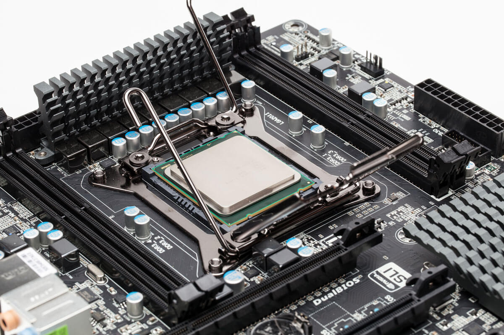

A cpu is the central processing unit of the computer system and is also the core component of what defines a computing device. A cpu isn't the only and main thing about a computer it’s just the core of the computer. A cpu is a chip located in the motherboard (MOBO) and it sits in a socket maid for it and the cpu has a large amount of small golden pins under it and do note if one of those pins are bent the computer might not be able to work. A cpu is separate from the memory which is where it temporarily stores information and also separated from the graphics card or chip which renders all the 3D graphics and puts everything on your screen.
The general functions of a CPU is carrying instructions out of a computer program and performs the basic arithmetical, logical input and output operations for the computer. Each CPU has a different chipset, a chipset acts like the motherboards communications center and traffic control and it determines what components are compatible with the motherboard including CPU RAM HDD and graphics card. It also dictates your future expansion options and to how far your system can be overclocked. A chipset is a set of electronic components in an integrated circuit known as a "Data Flow Management System" that manages the data flow between the processor and memory and peripherals. A chipsets is the glue that connects the microprocessor to the motherboard (MOBO) and the rest of the computer.